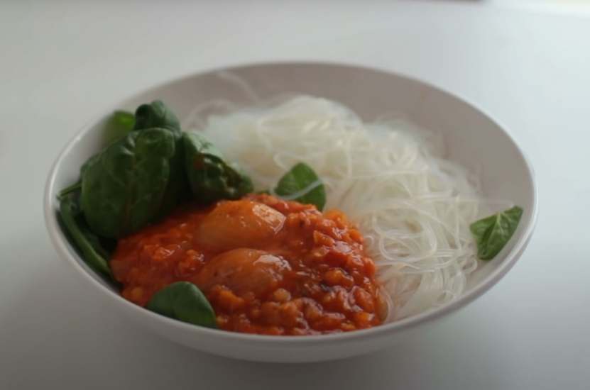

Lentil Dal with Rice Noodles

Description
Dal or dhal is both an ingredient and a dish: it refers to a type of dried split pea or lentil and the deeply spiced stew
made from simmering the split peas until nicely broken down.
Ingredients
- 1-2 onions, roughly chopped
- 1 tsp garam masala OR: ½ tsp turmeric, ¼ tsp cinnamon, ¼ tsp cumin, ¼ tsp garlic powder, 1 dash of black pepper, ½ tsp dried ginger
- 1 tbsp tomato purée
- 2 cups veggie broth (500ml)
- 1 can coconut milk
- ½ cup marinara sauce (125ml)
- 200g rice noodles
- 2 handfuls baby spinach, optional
Instructions
-
Heat the oil in a larger saucepan. Add the
chopped onions and sauté for 2-3 minutes until
translucent.
-
Add the spices and sauté for a few seconds to
unfold the flavours.
-
Add tomato purée, red lentils, vegetable broth
and marinara sauce.
- Bring the pot to a boil, then reduce the heat
and let everything cook for 15-20 minutes.
-
In the meantime prepare rice noodles by pouring
hot water on them. Let them sit for about 10
minutes and drain them.
-
Add a can of coconut milk to the saucepan, mix it in
and let everything simmer for another 10 minutes.
-
Serve into a bowl, season it to taste with baby
spinach and optionally squeeze over some lemon juice